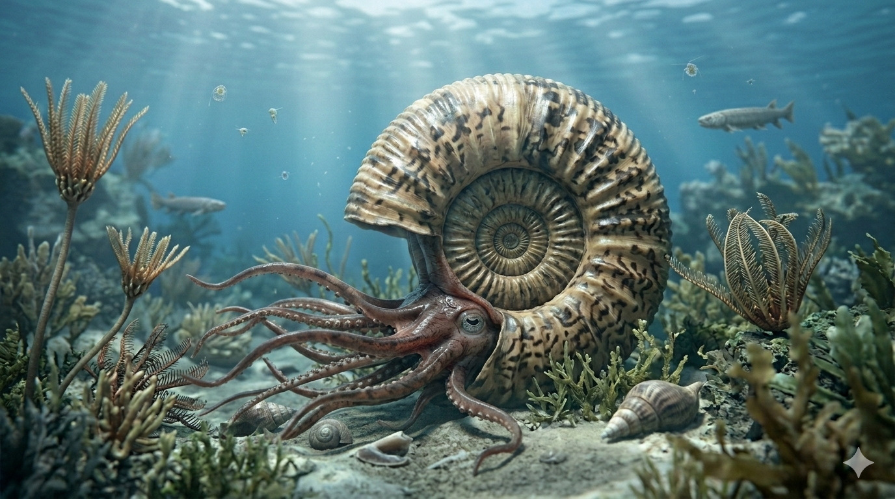

אמונייט
The Spiral Architect: Ammonoidea

Dossier // תעודת זהות מחקרית
תקופת פעילות
409 עד 66 מיליון שנה
מהדבון ועד סוף הקרטיקון
סיווג טקסונומי
רכיכות: סילוניות (Cephalopoda)
תת-מחלקה: Ammonoidea
ממדים (קוטר)
מ-1 ס"מ ועד 2.5 מטרים
מגוון הגדלים המרשים ביותר בטבע
הערה אקולוגית קריטית
האמונייטים אינם קרובי משפחה ישירים של הנאוטילוס המודרני כפי שחשבו בעבר. מחקרים גנטיים קובעים שהם קרובים בהרבה ל**תמנונים ולדיונונים** של ימינו, למרות הקונכייה החיצונית.
01 // ניתוח אטימולוגי נרחב
| רכיב השם | שפת מקור | פירוש, מקור ומשמעות היסטורית |
|---|---|---|
| Ammon | יוונית / מצרית (Ἄμμων) | אל השמש והבריאה המצרי מבוסס על האל **אמון (Amun-Ra)**. באמנות, האל הוצג עם **קרני איל (Ram horns)** מפותלות. פליניוס הזקן כינה אותם בלטינית *Ammonis cornua* ("קרני אמון"). |
| -ite | יוונית (itēs) |
אבן / מינרל / מאובן
סיומת המשמשת במדעי הטבע לתיאור עצמים מאובנים או מינרלים.
הפירוש המלא: "אבן קרן אמון" – בשל הדמיון לסלסול קרני האיל המיתולוגיות. |
המדען ומסע הגילוי: ז'אן-גיום ברוגייר
ילדות ורקע (1750–1798)
ז'אן-גיום ברוגייר נולד במונפלייה, צרפת, למשפחת רופאים אמידה. למרות שלמד רפואה כצו המשפחה, תשוקתו האמיתית הייתה איסוף ותיעוד של רכיכות ימיות. הוא זנח את הרפואה כדי להקדיש את חייו למדעי הטבע ולהבנת האבולוציה המוקדמת.
אידאולוגיה והישגים
ברוגייר היה איש ה"נאורות". הוא האמין שרק קטלוג שיטתי ומדעי של כל היצורים (החיים והנכחדים) יאפשר להבין את חוקי הטבע. הישגו הגדול ביותר היה הגדרת הסוג המדעי **Ammonites** בשנת 1789, צעד שהפך את המאובנים האלו מ"סקרנות דתית" לנושא מחקר ביולוגי רציני.

ברוגייר מת בפרס במהלך מסע מחקר ב-1798, כשהוא מותיר אחריו אלפי תיאורי רכיכות שהיוו את הבסיס לפלאונטולוגיה המודרנית.
02 // בלשות רקמות: איך יודעים את צורת הגוף?
עדות "צלקות השריר"
בתוך קונכיות שנשמרו היטב, מדענים גילו **צלקות שריר (Muscle Scars)** – נקודות חיבור זעירות שבהן רקמות הגוף הרכות היו מעוגנות לעצם. המיפוי של הנקודות הללו איפשר לחוקרים לבנות מודל תלת-ממדי של גוף החיה, כיוון הזרועות ומיקום האיברים הפנימיים.
מאובני רקמה נדירים
באתרים בודדים (כמו סולנהופן בגרמניה), הבוץ שימר צלליות של זרועות (8-10 במספר), שקי דיו ואפילו את ה**סיפונקול** – הצינור שחיבר בין המדורים. הוכח כי לאמונייט היו עיניים מפותחות מאוד ומקור דמוי-תוכי.
03 // טבלת ממדים: ממיקרו ועד ענקי העל
| קטגוריית גודל | קוטר הקונכייה | דוגמה למין / פרט |
|---|---|---|
| מיקרו-אמונייטים | 1 ס"מ עד 5 ס"מ | Cadoceras (פרטים צעירים) |
| ממוצע (הנפוץ ביותר) | 10 ס"מ עד 30 ס"מ | Hildoceras |
| גדולים | 50 ס"מ עד 1.0 מטר | Asteroceras |
| שיא עולמי (ענקי העל) | 2.0 עד 2.5 מטרים | Parapuzosia seppenradensis |
נתוני ה-Parapuzosia (ענק גרמניה, 1895)
הקונכייה הגדולה ביותר הגיעה לקוטר של **2.55 מטרים**. אורך החיה כולל הזרועות הגיע ל-**4 עד 5 מטרים** ומשקלה עמד על כ-**1,450 קילוגרם**. כדי להישאר בציפה נייטרלית, 90% מנפח הקונכייה היה גז (חנקן), והחיה חיה רק ב"מדורי המגורים" האחרונים.
הצוללת הסילונית
**הסיפונקול (Siphuncle):** צינור דק שעבר בכל המדורים ואיפשר הזרקת גז לשליטה בציפה.
**הנעה סילונית:** פליטת מים בעוצמה דרך משפך (Hyponome) לדחיפת הקונכייה קדימה או אחורה.
**תזונה:** טורפים פעילים שצדו דגים וסרטנים בעזרת המקור החזק שלהם.